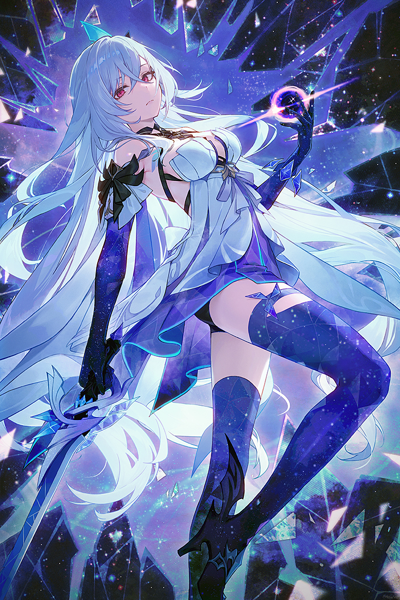
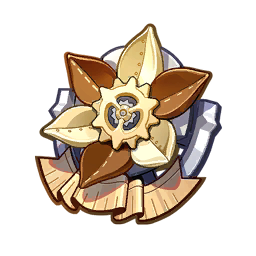

SANDS
ATK%
GOBLET
Cryo DMG%
CIRCLET
CRIT DMG / Rate

Skirk functions as an exceptionally fluid on-field Cryo carry designed around Freeze reaction loops. Completely unreliant on standard Elemental Energy, her kit operates entirely on Serpent's Subtlety, making her rotations accessible in both high-end Abyss and Overworld exploration. When paired with Escoffier and Furina, Skirk ascends to meta-defining performance alongside Mavuika, delivering relentless Cryo-infused slashes and massive Void Rift-empowered burst nukes.
Elemental Skill (Havoc: Warp) enters the Seven-Phase Flash state and grants non-overrideable Cryo infusion. Elemental Burst (Havoc: Ruin / Extinction) scales both her massive one-shot nuke and the sustained normal attack empowerments. Basic Normal Attack talent is secondary.
| Stat Metric | Target Threshold | Justification |
|---|---|---|
| ATK | 2,100+ | Primary scaling foundation for all Seven-Phase Flash slashes and Ruin burst scalings. |
| CRIT Rate | 70% ~ 80% | Essential to ensure consistent critical strikes on high-frequency Cryo normal strings. |
| CRIT DMG | 200%+ | Primary scaling multiplier stacked across Circlet, signature weapon, and substats. |
| Energy Recharge | 0% (Not Needed) | Uses Serpent's Subtlety instead of Energy; completely immune to energy drain mechanics. |
| Elemental Mastery | 0 (Avoid) | Freeze and pure Cryo scaling derive zero direct damage multiplier benefits from EM. |


Substat Priority: CRIT DMG > CRIT Rate > ATK% > Flat ATK
 Skirk
Main DPS
Skirk
Main DPS
 Escoffier
Heal / Shred
Escoffier
Heal / Shred
 Furina
Furina
 Yelan
Yelan
 Shenhe
Shenhe
 Citlali
Citlali
Escoffier provides essential Cryo/Hydro RES shred and healing, while Furina maxes Fanfare buffs and Shenhe elevates Cryo base multipliers.
Skirk
Main DPS
Furina
Fanfare Buff
Yelan
Hydro Sub-DPS
Escoffier
Citlali
Dual Hydro engine maximizes Serpent's Subtlety generation while Yelan and Furina provide relentless off-field Hydro DPS.
Skirk
Main DPS
 Xingqiu
Hydro App
Xingqiu
Hydro App
 Rosaria
Rosaria
 Kaeya
Kaeya
 Dahlia
Dahlia
 Barbara
Barbara
F2P-accessible Freeze core utilizing Xingqiu for continuous Hydro application and Rosaria/Kaeya for Cryo resonance.
| Tier | Name | Rating | Combat Mechanics & Pull Value |
|---|---|---|---|
| C1 | Far to Fall | ★★★ (HIGH VALUE) | Absorbing a Void Rift summons a Crystal Blade dealing 500% of Skirk's ATK as Cryo DMG (counts as Charged Attack DMG). |
| C2 | Into the Abyss | ★★☆ | Skill grants +10 Serpent's Subtlety; Burst takes 10 extra points into damage calculation; special Burst grants +70% ATK for 12.5s. |
| C3 | Serendipitous Sin | ★★☆☆ | Increases Elemental Burst (Havoc: Ruin) Level by 3. |
| C4 | Fractured Flow | ★★☆ | Each Death's Crossing stack from A2 passive increases Skirk's ATK by 10% / 20% / 40%. |
| C5 | End of Wishes | ★★☆☆ | Increases Elemental Skill (Havoc: Warp) Level by 3. |
| C6 | To The Source | ★★★★★ (WHALE) | Void Rift absorption grants Havoc: Sever stacks (max 3), unleashing 750% ATK Burst strikes, 180% ATK coordinated normal attacks, and 80% damage reduction counters. |
Skirk represents a masterclass in modern Cryo hypercarry design, eliminating energy restrictions in favor of the dynamic Serpent's Subtlety resource loop. While locked exclusively to Freeze architectures, her synergy with Escoffier and Furina propels her to top-tier status with unmatched fluid rotations and devastating Void Rift damage scaling.